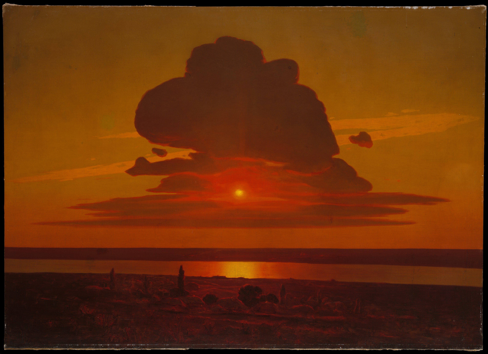

The horizon sits low; a massive cloud crosses the centre; dark water bands answer its lateral rhythm. The slightly off-centre sun is not simply hanging—it seems to be sinking.
Hue is compressed into orange, red and brown. Value contrast replaces complementary collision: dark cloud against luminous air, black earth against gold reflection.
Layered oil paint, shifts in thickness, and softened edges make the air seem to glow. Kuindzhi leaves the cloud partly unresolved, asking the viewer to complete its volume.
Born near Mariupol and active in Saint Petersburg, he became known for charged effects of light in sunsets and night scenes. First comes the shock of light; then the names of things.
Arkhyp Kuindzhi, Red Sunset, 1905–08. The Metropolitan Museum of Art, 1974.100; image: Met Open Access original. The museum marks the work Public Domain; confirm local reproduction terms. Copyright remains with the original artist and relevant image-rights holders. Appreciation by Daily Art.